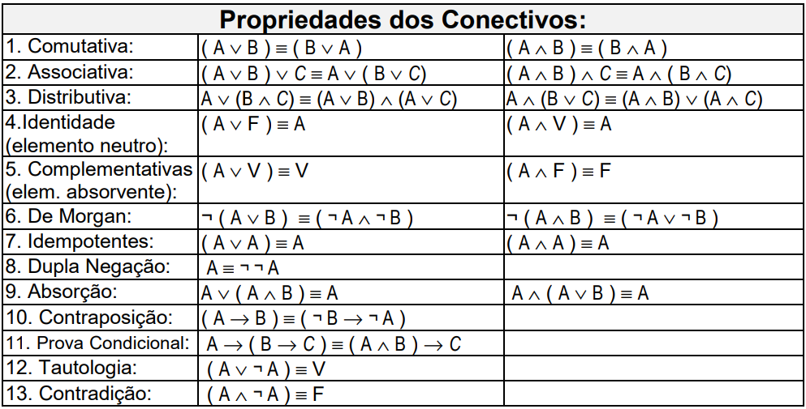

Nicolas Andreas Jäckel - Projetos
Resolução de Problemas com Lógica Matemática
Cálculo Proposicional: (CP – também conhecido como Lógica Proposicional) é um dos mais simples formalismos lógicos existentes. Este cálculo lida apenas com enunciados declarativos, chamados de proposições. As sentenças exclamativas, imperativas e interrogativas são excluídas.

Manipulação Sintática: são princípios que permitem a obtenção de fórmulas proposicionais equivalentes a uma fórmula dada, através da substituição de suas subfórmulas.
Inferência é um processo pelo qual, através de determinados dados, chega-se a alguma conclusão. Outros sinônimos de inferência são conclusão, implicação, ilação e consequência. Certas inferências são imediatas, são diretas. Inferência imediata é aquela na qual a conclusão surge como consequência necessária da premissa.